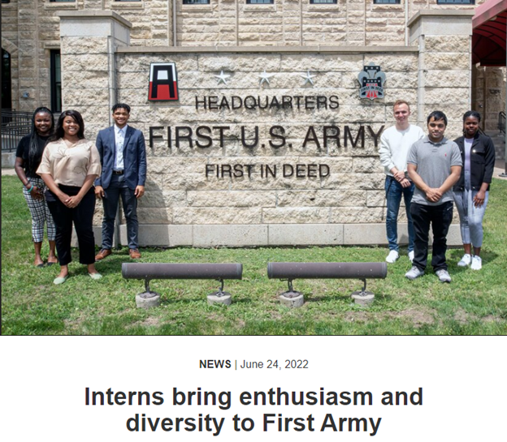
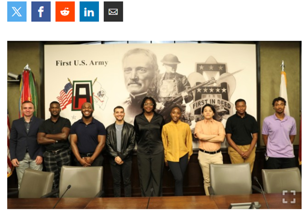

Michael Quiñones
Bachelor’s in Computer Engineering (Expected Graduation: May 2024) with a GPA of 3.90.
Experience includes software development at Google, cybersecurity/IT internship with the DoD, and SharePoint web development internship.
Leadership role as a Student Advocate at CAHSI, leading sessions and facilitating conferences.
C++
Java
Python
JavaScript
HTML
CSS
Git
Computer Reimaging
Experience at First Army's 2022 Internship Click image
Interned at the Information Systems Department (ISD G6-signals), First Army HQ, responsible for training, mobilization, and deployment of reserve units.
As an IT specialist at First Army HQ, responsibilities included:
Experience at First Army's 2023 Internship Click image
As a SharePoint Web Developer for First Army HQ, responsibilities included: